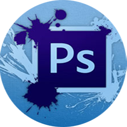
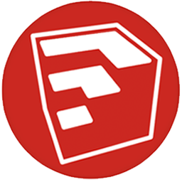
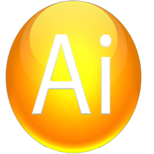

DISEÑO GRÁFICO
La principal función del diseño gráfico consiste en transmitir una determinada información a través de composiciones gráficas, las cuales llegan al público objetivo mediante diferentes tipos de soportes, como carteles, folletos, logos, etc. Además de difundir ideas, el diseño gráfico también se encarga de describir gráficamente el perfil de una compañía. En este ámbito, lo que produce el diseñador representa la primera impresión que se lleva el cliente de la empresa, organización o compañía.
Como podemos ver, las funciones del diseño gráfico están centradas en comunicar en forma visual un determinado mensaje o idea, haciendo uso de diferentes recursos, elementos, arte y creatividad. El diseñador suele brindar soluciones creativas a los problemas, ofreciendo propuestas originales para satisfacer las necesidades de empresas y clientes. En este curso se aprende a manejar los diferentes programas utilitarios. Como ser:
En este curso se aprende a manejar los diferentes programas de diseño gráfico, como ser:
PHOTOSHOP
Adobe Photoshop es un editor de imágenes usado principalmente para el retoque de fotografías y gráficos. La herramienta estrella de Adobe fue incorporando mejoras con el paso de los años hasta convertirse es la herramienta más completa de retoque fotográfico, y la favorita de los profesionales del sector.
Destinada al diseño gráfico, diseño web, 3D y fotografía, se trata de uno de los programa más utilizado en el mundo, ya no solo a nivel fotográfico si no en líneas generales.
Para que Photoshop sea el programa de retoque fotográfico más usado del mundo se debe a que este es una de las herramientas más completas de su categoría, ofreciendo un número de posibilidades casi ilimitado. Una de las características más representativas de este programa es el sistema de capas, que simulan a hojas de trabajo apiladas.
COREL DRAW
Es una aplicación que se encarga de realizar dibujos de alto nivel utilizando el manejo de vectores como premisa fundamental, que además permite ser utilizada para la publicación de Páginas Web, como también la elaboración de Maquetas para Impresión, entre otras funcionalidades.
Con el correr de los años fue teniendo distintas funcionalidades que fueron mejorándose a sí mismas con la llegada de nuevas versiones, hasta llegar a ser un Paquete de Aplicaciones que conforma una de las herramientas de Diseño Gráfico más utilizadas, no solo para tareas gráficas, sino también para el Diseño Web.
Además de poder realizar diseños digitales, también puede ser utilizado para la elaboración de Planos de alta calidad, por lo que también es utilizado por estudiantes y profesionales de Arquitectura, como también de Ingeniería o cualquier otra disciplina que dependa de Dibujo Técnico que emplee imágenes vectoriales como punto principal, además de complementarse con otras aplicaciones y complementos que permiten elaborar diseños tridimensionales, por ejemplo.
SKETCHUP
Es un programa de diseño y modelado en tres dimensiones (3D). Para entornos de arquitectura, ingeniería civil, diseño industrial o peliculas.
SketchUp es una herramienta permite conceptualizar rápidamente volúmenes y formas arquitectónicas de un espacio. Además, los edificios creados pueden ser geo-referenciados y colocados sobre las imágenes de Google Earth. También, los modelos pueden ser subidos a la red mediante el propio programa y almacenarse directamente en la base de datos.
SketchUp fue diseñado para usarlo de una manera intuitiva y flexible, facilitando ampliamente su uso en comparación con otros programas de modelado 3D. Cualquier persona, desde un niño hasta un adulto, pueden de manera muy sencilla aprender a utilizar esta herramienta para diseño tridimensional. SketchUp permite conceptualizar y modelar imágenes en 3D de edificios, coches, personas y cualquier objeto o artículo dentro de la imaginación del diseñador o dibujante. Además, para facilidad, el programa incluye una galería de objetos, texturas e imágenes para descargar.
ILLUSTRATOR
Adobe Illustrator es un programa informático, un editor de gráficos vectoriales y, por tanto, sirve para la edición y modificación de esta clase de imágenes. Son archivos digitales donde los diferentes elementos están formados por objetos geométricos, dependientes entre sí, con atributos matemáticos de acuerdo a su posición, a su forma o a su color. Es un software que permite la creación y modificación de estas imágenes a través de un espacio de trabajo llamado taller de arte o mesa de trabajo.
Es un software que permite la creación y modificación de estas imágenes a través de un espacio de trabajo llamado taller de arte o mesa de trabajo.
Adobe Illustrator, por tanto, es sumamente útil a la hora de desarrollar cualquier clase de documento gráfico que requiera múltiples modificaciones. Podría crearse la imagen corporativa de una empresa, con su logo y diferentes elementos, y esos mismos archivos originales podrían emplearse para la impresión sobre una tarjeta al mismo tiempo que sobre la fachada de un rascacielos.Es por eso que Illustrator es el perfecto aliado a la hora de crear cualquier gráfico que tenga que ser reproducido de diferentes maneras y en distintos ámbitos, siendo recurrentemente modificado y alterado.
Para que el curso de diseño gráfico sea más facil de aprender los he separado en modulos. A continuación se puede observar el programa de estudio:
Ver más Cursos...